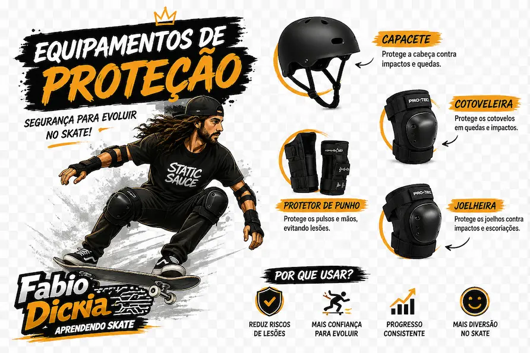

Segurança e Motivação
Antes de começar a andar de skate, é essencial usar os equipamentos de proteção corretos e entender que o aprendizado é contínuo — o skate é infinito, assim como a dedicação e fé que o acompanham.

Equipamentos essenciais
- 🪖 Capacete — protege contra impactos na cabeça.
- 🛡️ Joelheiras — evitam lesões em quedas.
- 🦾 Cotoveleiras — protegem os braços em tombos.
- 👟 Tênis adequado — firmeza e aderência ao skate.
Veja na prática
🎥 Assista ao vídeo completo no YouTube
Mensagem motivacional — por Fabio Dicria:
“Aprender skate é mais do que equilibrar o corpo — é equilibrar a mente e o coração. Faz cinco anos que estou nessa jornada, e cada queda me ensinou algo novo. O skate é infinito, assim como a palavra de Deus. Quando penso em Jesus, lembro que a fé e a persistência são o que nos mantêm de pé, mesmo quando o chão parece duro demais. Cada manobra é um exercício de paciência, cada tentativa é um passo rumo à superação. O segredo é nunca desistir, porque o verdadeiro progresso vem quando a gente acredita — em Deus, na vida e em nós mesmos.”
Compartilhe sua experiência
✅ Obrigado por compartilhar sua experiência!